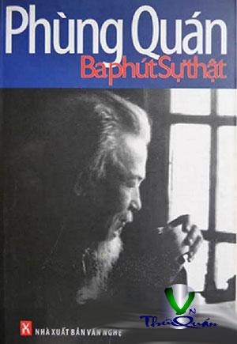

« Back
Ba Phút Sự Thật
By Phùng Quán

Lời Nói Đầu
1. Ba Phút Sự Thật
2. Xông Đất Nhà Thơ Tố Hữu
3. Cuộc Viếng Thăm Bất Chợt Nhà Thơ Tố Hữu
4. Một Thoáng Văn Cao
5. Chuyện Vui Về Triết Gia Trần Đức Thảo (1)
6. Hành Trình Cuối Cùng Của Một Triết Gia
7. Nhà Thơ Với Tệ Tham Nhũng
8. Chút Nghĩa Cũ Càng
9. Hằng Nga Thức Dậy
10. Nhà Tiên Tri Tầm Cỡ Đại Đội
11. Một Năm Lao Động Ở Công Trường Cổ Đam
12. Những Ngày Cuối Năm, Tìm Thăm Người Dựng Lễ Đài Tuyên Ngôn Độc Lập
13. Người Bạn Lính Cùng Tiểu Đội
13. Người Bạn Lính Cùng Tiểu Đội (2)
14. Bản Hùng Ca Bị Mối Xông Và Mười Bảy Bộ Hài Cốt
15. Tuổi Thơ Dữ Dội - Bản Di Chúc Chiến Sĩ Của Tôi
16. Sinh Ra Trong Một Gia Đình Cách Mạng
17. Yêu Đến Tận Cùng 18. Mẩu Chuyện Vui Về Phùng Quán: ĂN VỤNG